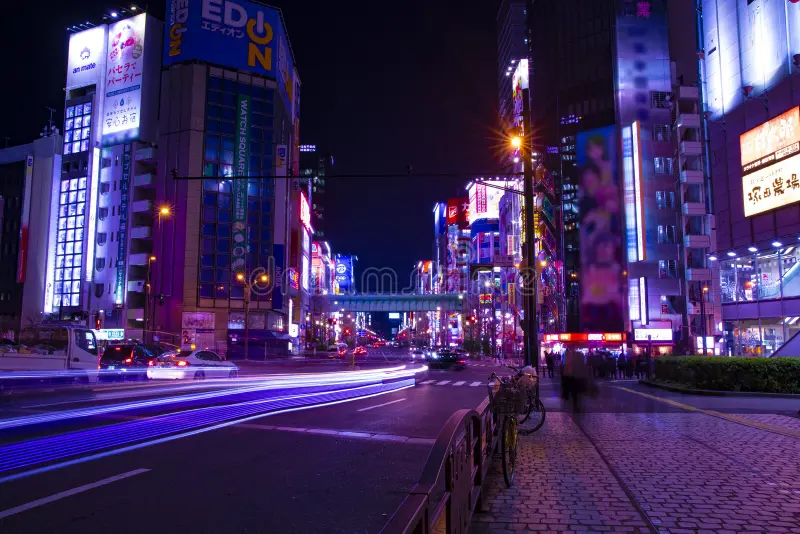
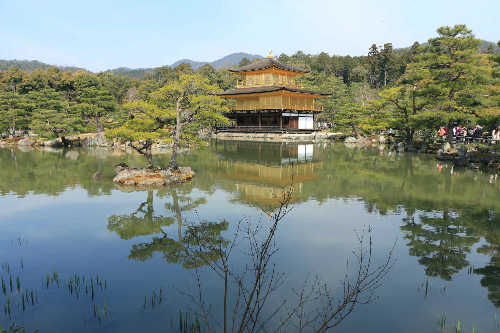

Por que este sonho é importante para mim?
Desde que comecei meus estudos em tecnologia, sempre tive como objetivo profissional desenvolver soluções de software completas e de grande impacto. Trabalhar em projetos desafiadores e aplicar meus conhecimentos de programação é um objetivo contínuo na minha jornada acadêmica e profissional.
Paralelamente, no âmbito pessoal, um dos meus maiores sonhos é viajar para o Japão e imergir na sua cultura fascinante. Sempre admirei como o país consegue unir tecnologia de ponta com uma preservação histórica rica e tradições marcantes.
Visitar distritos como Akihabara e Tóquio, além de conhecer lugares históricos como Quioto, seria uma experiência inesquecível e uma grande realização pessoal.
Galeria Visual do Sonho
Algumas imagens que representam elementos desse objetivo e destino:

